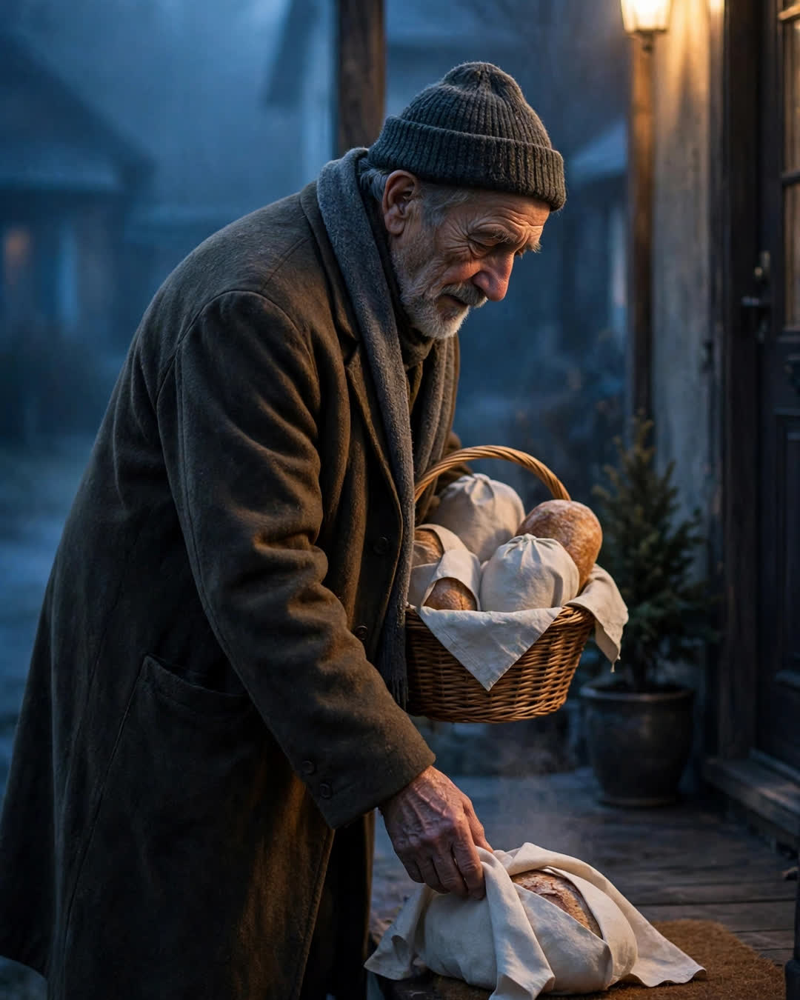

The Night Baker
A Clipp Kaili original story

For six months, someone left warm bread on porches all over our town before dawn, and nobody could figure out who it was.
It started in January, the coldest month anybody could remember. A loaf on the Hendersons' step, still warm, wrapped in a clean dish towel. Sourdough for the family whose father had just lost his job. Cinnamon rolls on the porch of the widow in the blue house, on the exact morning of her husband's birthday, which only three people in town should have known. Banana bread for the night-shift nurse. Always warm. Always anonymous. Always gone by the time the sun was properly up, except for the smell, which lingered in the cold air like proof.
The town named him the Bread Angel, and the hunt began — lovingly, the way a town hunts for something it already suspects it does not want to ruin.
The diner started a guessing board. The high school paper ran a column. People set out porch cameras and found only blurred footage of a figure in a long coat, head down, moving with the careful speed of someone who had done early mornings his whole life.
I was the one who solved it, by accident, at 4:30 on a March morning when my newborn would not sleep and I was walking her up and down our dark street in a carrier.
There, under the streetlight at the end of Ash Street, was Mr. Kowalski.
Eighty-one years old. Retired baker. He had run Kowalski's Bakery on Main for forty years before his wife died and his hands and his sleep both gave out on him. Since her passing, he told me later, he rarely slept past three. Grief had made him an early riser in a way no alarm clock ever could.
"What is a baker supposed to do with all that awake?" he said, when I caught up with him, a basket of wrapped loaves on his arm. "Lie there and miss her? Or make the bread?"
He had been baking through the night in his little home kitchen, using his pension for flour and butter, keeping a notebook the way he always had at the bakery — who was sick, who was broke, who had a baby, whose anniversary had nobody left to mark it. The cinnamon rolls for the widow were not a coincidence. At Kowalski's, for thirty years, her husband had ordered them every birthday. Mr. Kowalski remembered.
"Do not put my name in the paper," he begged me. "It is not charity if everybody claps. It is just bread. Bread is supposed to be quiet."
I kept his secret for five months. I only broke it, with his permission, when his oven died in August and he sat in my kitchen looking at his hands and said, "Well. That is the end of the bread, I suppose."
It was not.
The town that had hunted the Bread Angel for half a year raised the money for a new oven in nine days. The hardware store delivered it free. The high school kids painted a small sign he pretended to hate and never took down: "Kowalski's — Open When It Matters." These days he has two volunteers, both insomniacs, both sworn to the same rule: deliver before dawn, never knock, never take credit.
He is eighty-two now. He still cannot sleep past three.
But on Ash Street, that is not called insomnia anymore.
It is called the first shift.
Some people get old and the world gets smaller. Others preheat the oven, and feed it anyway.
This story is a work of fiction, written to touch hearts and bring families closer.
← Back to all stories